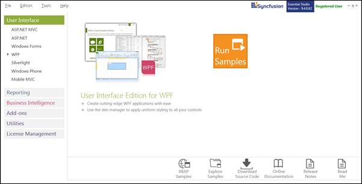
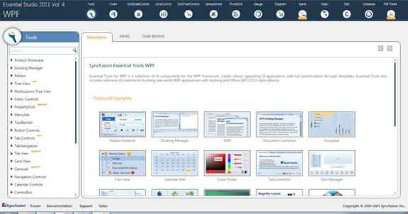
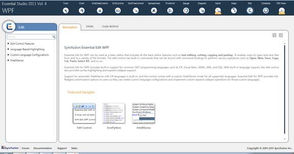

This section covers the location of the installed samples and describes the procedure to run the samples through the sample browser and online. It also lists the location of utilities, assemblies and source code.
Sample Installation Location
The Essential Edit WPF samples are installed under the following location, locally on the disk:
...\My Documents\Syncfusion\EssentialStudio\<Version Number>\WPF\Edit.WPF\Samples\3.5
Viewing Samples
To view the samples, follow the steps below:
1. Click Start-->All Programs-->Syncfusion-->Essential Studio < v9.4.0.62> -->Dashboard.
Essential Studio Enterprise Edition window is displayed.

Figure 2: Syncfusion Essential Studio Dashboard
User Interface Edition panel is displayed by default.
2. Click Run Samples link.
3. Tools samples are displayed by default.

Figure 3: WPF Edition Sample Browser
4. Click the Edit object in the fish eye panel provided at the bottom of the window. Edit samples are displayed.

Figure 4: Essential Edit WPF Samples
5. Select any sample and browse through the features.
Source Code Location
The default location of the Essential Edit WPF source code is:
[System Drive]:\Program Files\Syncfusion\Essential Studio\<Version Number>\WPF\Edit.WPF\Src